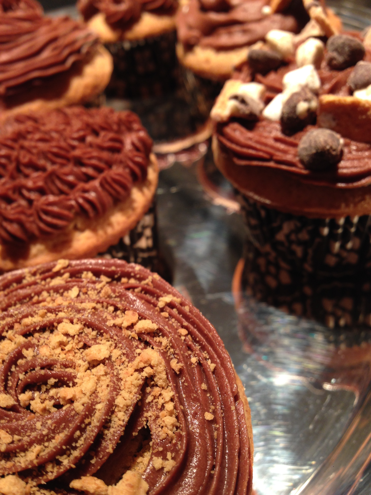
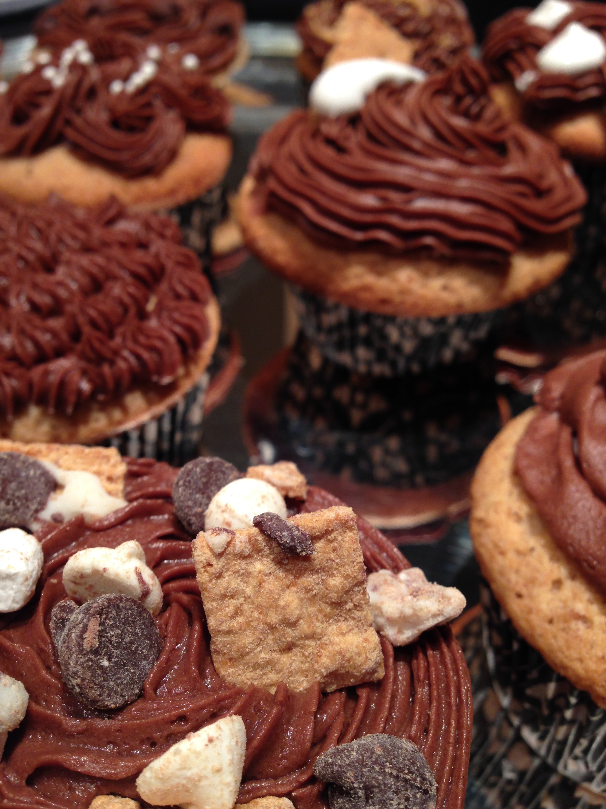
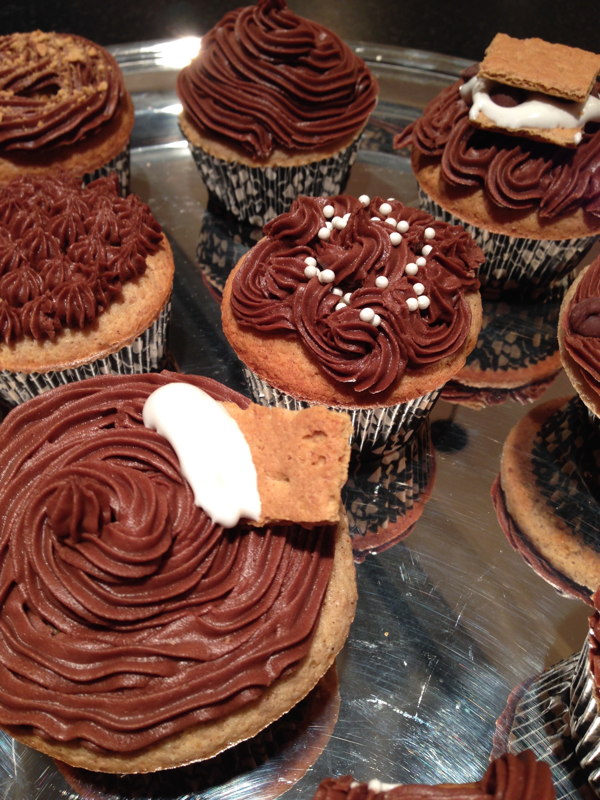
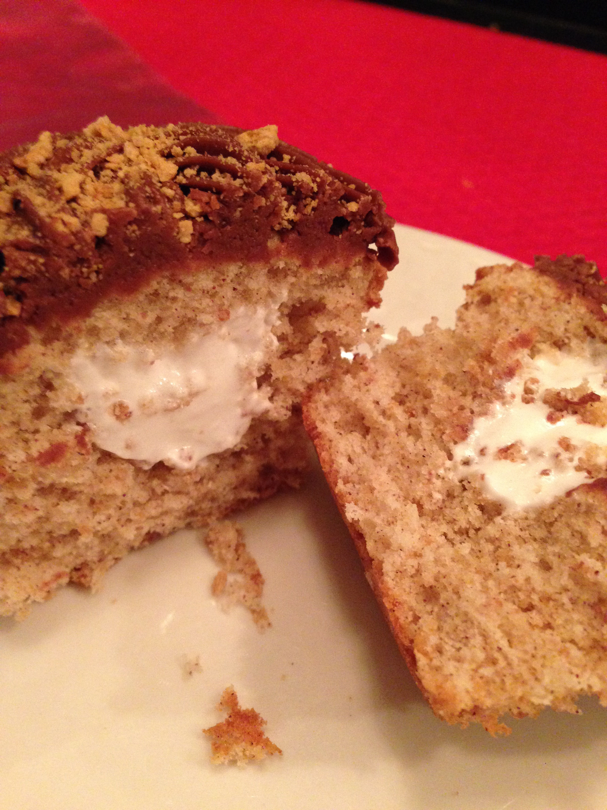

cinnamon graham s'mores cupcakes
graham cracker s'mores cupcakes with chocolate buttercream frosting and a marshmallow filling
baked in March 2015
yield: 12 cupcakes
prep time: 20 minutes
cook time: 18 minutes
difficulty level: medium





Instructions
Cupcakes
- 1/2 cup unsalted butter, softened
- 1 cup granulated sugar
- 2 eggs
- 2 tsp vanilla extract
- 1 1/2 tsp cinnamon
- 1/2 tsp salt
- 2 tsp baking powder
- 1 1/2 cups all purpose flour
- 1/2 cup graham cracker crumbs
- 12 Tbsp milk
Marshmallow
- 2 egg whites
- 1/2 cup granulated sugar
- 1/4 tsp cream of tartar
- 1/2 tsp vanilla extract
Frosting
- 8 Tbsp unsalted butter, softened
- 5 cups powdered sugar
- 1/2 cup cocoa powder
- 1/2 tsp vanilla extract
- 8 Tbsp milk
Directions
For the cupcakes:
- Preheat oven to 350°F.
- In a large bowl or stand mixer, cream butter with sugar.
- Mix in egg and vanilla, scraping bowl as needed.
- Add remaining dry cupcake ingredients, mixing until fully incorporated.
- Slowly add in milk, mixing just until no streaks remain and batter is smooth.
- Using a large cookie scoop, add one scoop to each liner.
- Bake for 18-20 minutes or until a toothpick inserted comes out clean.
- Cool in pan for 5 minutes, then transfer to a wire rack to cool completely.
For the marshmallow:
- In a heatproof bowl over a saucepan of simmering water, whisk together egg white, sugar, and cream of tartar, until sugar dissolves.
- Continue whisking over simmering water until egg white mixture is warm to the touch. Remove from heat.
- Using a hand mixer or stand mixer, beat until still peaks form.
- Add in vanilla in last 30 seconds.
- Transfer marshmallow to a piping bag with round piping tip or a large plastic bag with the corner cut off.
- Hollow out the centers of each cupcake, using a sharp knife.
- Fill cupcakes with marshmallow.
For the frosting:
- In a large bowl or stand mixer, cream 8 Tbsp of butter.
- Sift together powdered sugar and cocoa powder, mix together with butter.
- Mix in vanilla and enough milk to desired piping or spreading consistency.
- Frost cupcakes immediately.
Nutrition
- Total calories: 5,801
- Calories per cupcake: 483